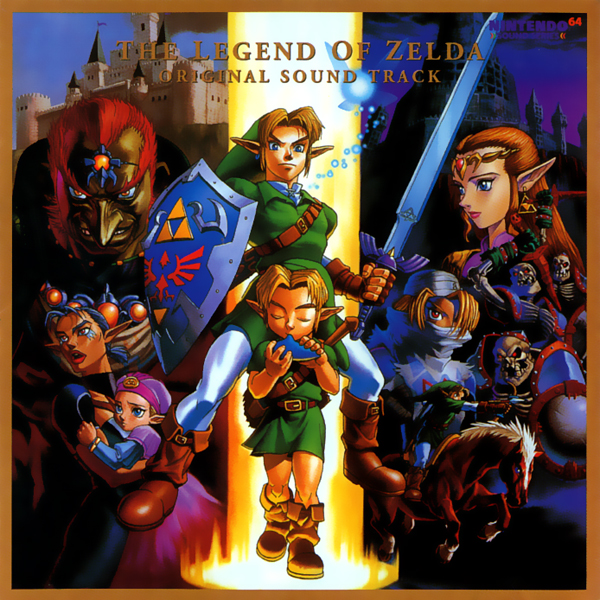

SoundtrackThe cover art for the soundtrack gives a pretty cool representation of the game itself. On the left it shows the world when Link is young, the middle shows both young and old link, and the right shows the world when link is old. |
Title TrackThis first song is a very important addition to the list. It's the first thing you hear waiting on the title screen when you enter the game for the first time. |
Hyrule FieldHyrule field is an easy addition to the list as you hear this song a lot throughout the game. You frequently enter Hyrule Field to travel to each area, so this song will get stuck in your head quickly. |
Zelda's ThemeThe last song I've included is Zelda's Theme. This is a song that follows you throughout the game. You're going to have to play Zelda's Lullaby on your ocarina many times, and this song has a fully mixed version of that. |